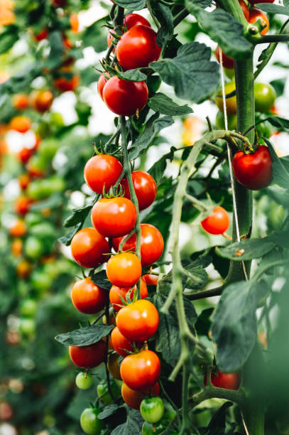
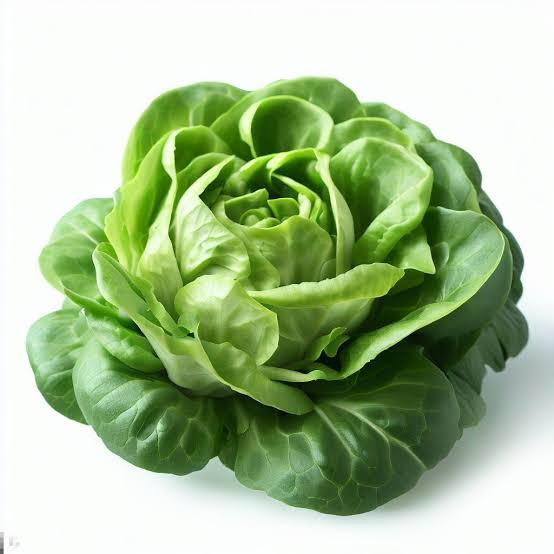
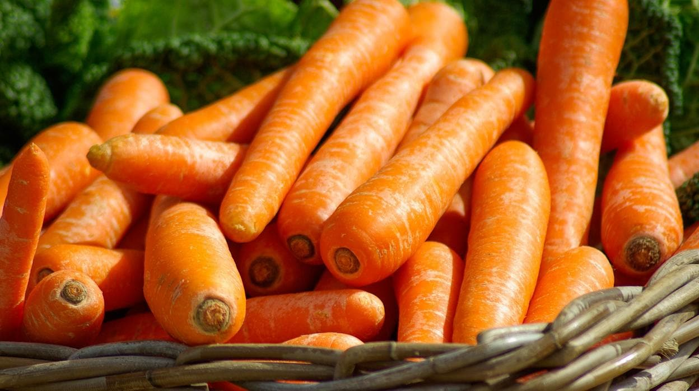
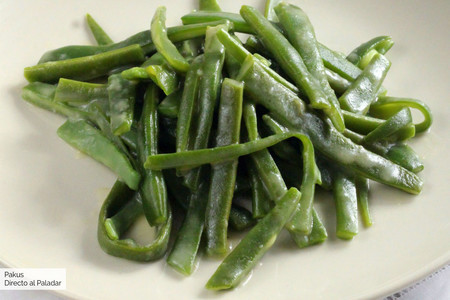
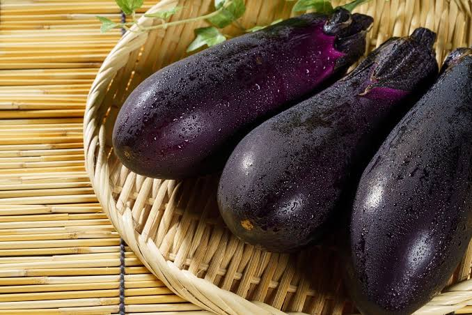

Tomate
Tiempo de cosecha: 3-4 meses
Precauciones: Evitar exceso de agua
Clima: Templado

Lechuga
Tiempo de cosecha: 2-3 meses
Precauciones: Evitar temperaturas extremas
Clima: Frío moderado

Pimiento
Tiempo de cosecha: 4-5 meses
Precauciones: Necesita luz directa
Clima: Cálido
Zanahoria
Tiempo de cosecha: 3-4 meses
Precauciones: Suelo bien drenado
Clima: Templado

Frijoles
Tiempo de cosecha: 2-3 meses
Precauciones: Necesitan soporte para crecer
Clima: Cálido

Berenjena
Tiempo de cosecha: 4-5 meses
Precauciones: Requiere mucho sol
Clima: Cálido